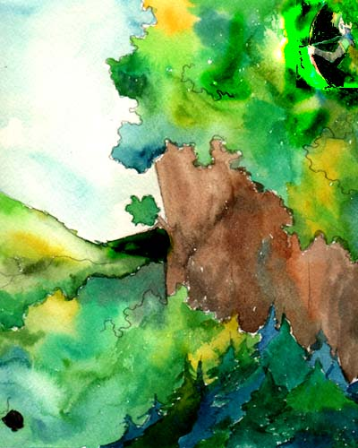

ll ブルティークの追撃戦 ll

これのどこが追撃してるんだろうね…（いきなり反省会かよ）
いや、弓構えてるし隠れてるし一応何か狙ってるみたいなんだけど
ものごっつわかりづらいですな。グラがどこにいるかとか（ダメ）
でもね、初の試みもしてみたのよ？
人物と背景とを分けて合成したとか
合成したとか
（合成だけなのね…）
そして超短時間仕上げ
２時間かかんなかったかな。チャットしながら色塗ってて加工して提出したの
ていうか締め切り破ってごめんなさい（もう帰れ）
次回はもっと時間をかけてゆっくり丁寧に塗りたいと思いまつ
ll 2001.12.01 ll ホルベイン透明水彩 ll
Back
ll
■
ll
Next